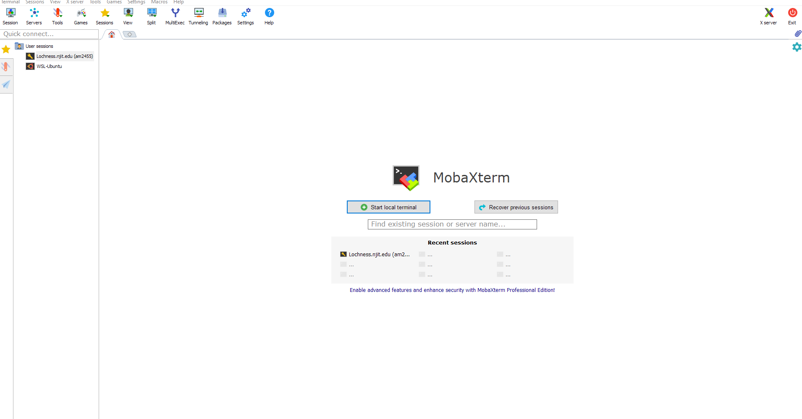
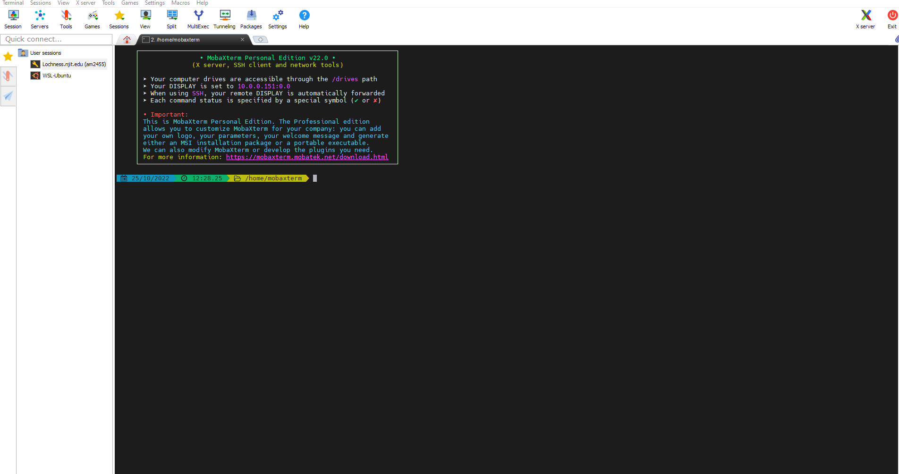
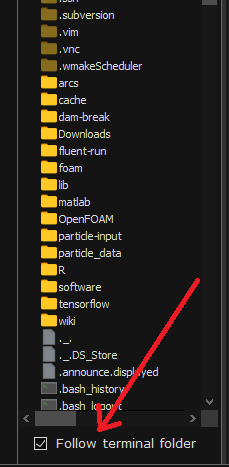
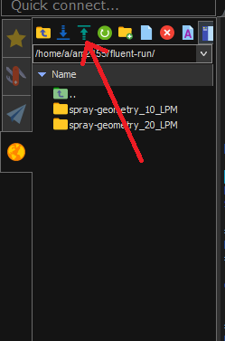

Access to NJIT Clusters
The following instructions are provided to access NJIT HPC clusters from a local computer.
Getting a Login
Faculty can obtain a login to NJIT's HPC & BD systems by sending an email to hpc@njit.edu. Students can obtain a login either by taking a class that uses one of the systems or by asking their faculty adviser to contact on their behalf. Your login and password are the same as for any NJIT AFS system.
Access to Clusters
Make sure the user is connected to NJITsecure if the user is on campus. If working off campus, NJIT VPN is required. Please find the details here.
Here we will provide instructions on getting started with NJIT HPC for the user who uses Windows OS.
Windows Users
Download the MobaXterm from this link. Open MobaXterm after installation is completed. Select Start local terminal to open the terminal.

Type ssh ucid@HPC_HOST.njit.edu. Replace ucid with NJIT UCID. Substitute lochness or Stheno for HPC_HOST.

.User will be prompted to type the password. The password is NJIT UCID password. After successful login, user will see the following in the terminal, which means the user is now connected to HPC.
Last login: Tue Oct 25 12:37:31 2022 from 10.192.228.138
Starting /home/a/user/.bash_profile ... standard AFS bash profile
========================
Home directory : /home/u/user is not in AFS -- skipping quota check
========================
On host login-1 :
12:38:05 up 315 days, 22:36, 35 users, load average: 10.32, 10.10, 10.63
=== === === Your Kerberos ticket and AFS token status === === ===
Kerberos : Renew until 10/26/22 12:38:01, Flags: FRIA Renew until 10/26/22 12:38:01, Flags: FRA
AFS : User's (AFS ID 105631) tokens for afs@cad.njit.edu [Expires Oct 25 22:38]
Running your /home/u/user/.modules file:
To see your aliases, enter "alias"
login-1-41 ~ >:
Mac OS/ Linux Users
Open terminal from Launchpad and select terminal. Type the following in the terminal
localhost> ssh -X -Y ucid@HPC_HOST.njit.edu
Users will be prompted for your password. Enter your AFS password. Users can omit the -X -Y if you are not using a graphic interface. Substitute lochness or Stheno for HPC_HOST.
Once the password is provided the user will see the following
The authenticity of host 'user@lochness.njit.edu' cannot be established.
DSA key fingerprint is 01:23:45:67:89:ab:cd:ef:ff:fe:dc:ba:98:76:54:32:10.
Are you sure you want to continue connecting (yes/no)?
Answering yes to the prompt will cause the session to continue. Once the host key has been stored in the known_hosts file, the client system can connect directly to that server again without the need for any approvals.
Transfer the Data from the Local Machine to Clusters or vice versa
Windows Users
User needs to select the follow terminal folder of the left pane of the MobaXterm terminal.

Next, to transfer the data from the local machine to Lochness user needs to select the Upload to current folder option, as shown below. Selecting this option will open a dialogue box where user needs to select the files to upload.

For transferring the data from Lochness to the local machine user needs to select the directory or the data from the left pane and then select Download selected files.
Mac OS/Linux Users
User can also use the command in the terminal to transfer in and out the data
rsync -avzP /path/to/local/machine ucid@HPC_HOST.njit.edu:/path/to/destination
Replace HPC_HOST with lochness or Stheno. This will transfer the data from the ocal machine to HPC cluster.
To transfer the data from HPC cluster to local machine use
rsync -avzP ucid@HPC_HOST.njit.edu:/path/to/source /path/to/local/machine